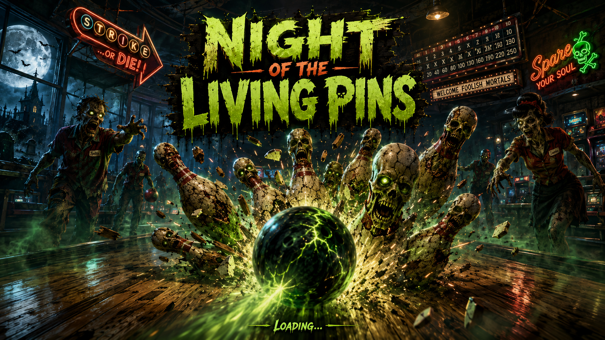

Key art: lane chase
Use for hero composition, ball impact energy, lane reflections, logo treatment, and foreground threat scale.
Use the supplied artwork as the visual north star. The level should read as a playable bowling lane first, then as a crowded arcade-horror scene with undead staff, cracked living pins, green ectoplasm, orange neon, moonlit blue shadows, and a dangerous back-machine focal point.

Use for hero composition, ball impact energy, lane reflections, logo treatment, and foreground threat scale.

Use for VFX timing, debris arcs, green energy, crowd pressure, and pin collapse silhouettes.

Cracked ceramic, red band, exposed skull face, glowing eyes, slime, chipped base, and asymmetrical damage.